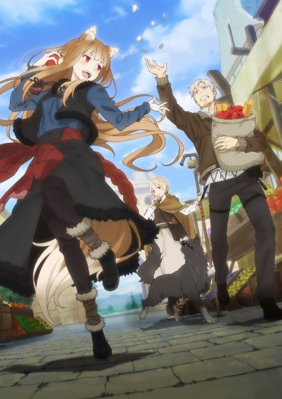
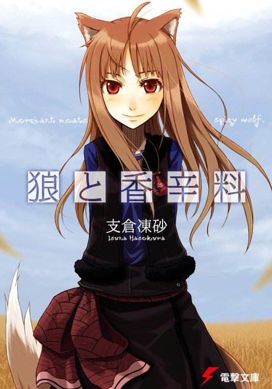
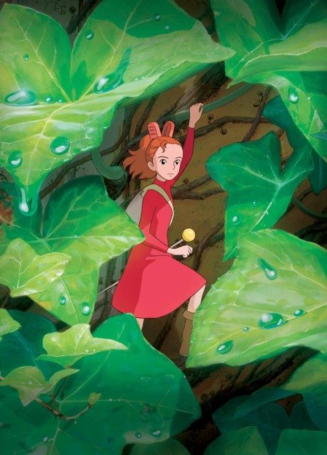
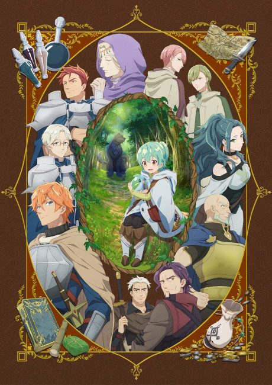

Light novelNovel Anime
Light novelSpice and Wolf
狼と香辛料 MERCHANT MEETS THE WISE WOLF
AniList7.9
Animeter—
Episodes25 ep
SourceLight novel
Is it worth pushing through?
Built from what visitors report across all 25 episodes.
Loading reports…Checking what other people said about this one.
Sign in with your email at the top of the page to add your report.
More like Spice and Wolf
 Manga Vol. 208.1
Manga Vol. 208.1

Film7.7 Manga Ch. 819.1
Manga Ch. 819.1
 Manga Ch. 3408.9
Manga Ch. 3408.9
 Original8.4
Original8.4

Manga Vol. 37.4